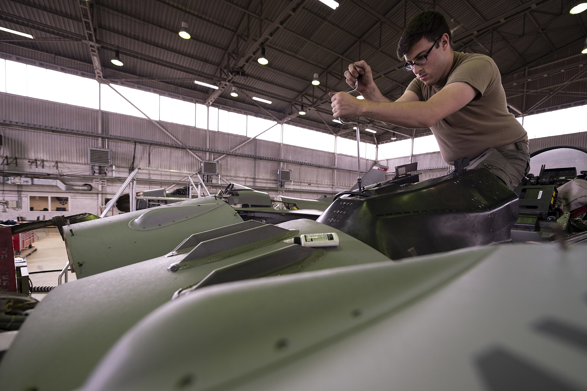
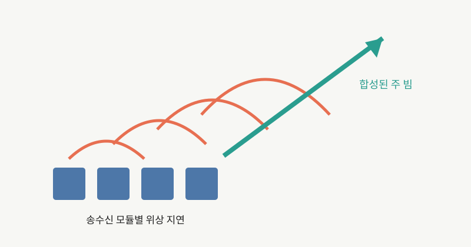

NOTE 08 · RADAR
GaN 기반 AESA 레이더의 구조
기계식 레이더는 안테나를 돌려 시선을 바꾼다. AESA는 작은 송수신 모듈 수백~수천 개의 위상을 전자적으로 조절해 빔의 방향을 바꾼다. 움직이는 부품 없이 매우 짧은 시간에 다른 방향과 파형을 오갈 수 있고, 탐색과 추적을 유연하게 나눌 수 있다.


배열의 각 소자는 같은 주파수의 신호를 내보내되 위상에 작은 차이를 둔다. 특정 방향에서는 파가 같은 위상으로 더해지고 다른 방향에서는 상쇄된다. 위상 지연값을 바꾸면 주 빔의 방향이 바뀐다. 수신 때도 같은 원리로 특정 방향에서 온 반사 신호를 강조한다.
여기에 질화갈륨(GaN)이 들어오면서 배열 하나가 낼 수 있는 전력과 효율의 여지가 커졌다. GaN은 실리콘이나 GaAs보다 밴드갭이 크고 높은 전계와 온도를 견딘다. 같은 면적에서 더 높은 RF 출력을 내기 좋다는 뜻이다. 레이더 입장에서는 탐지거리, 배열 크기, 냉각 가운데 설계자가 선택할 수 있는 폭이 넓어진다.
하지만 ‘출력이 세졌다’로 끝내면 절반만 본 것이다. 수천 개 증폭기가 만든 열을 고르게 빼야 하고, 모듈별 위상과 진폭 오차도 보정해야 한다. GaN의 높은 전력밀도는 냉각 설계를 더 어렵게 만들기도 한다. 소자 성능이 곧바로 레이더 성능이 되는 것은 아니다.
AESA는 빔 스케줄링도 중요하다. 넓은 영역 탐색, 특정 표적의 높은 갱신율 추적, 지상 고해상도 합성개구 영상과 통신 기능이 같은 시간 자원을 나눠 쓴다. 레이더 프로세서는 임무 우선순위에 따라 파형, 빔 위치와 체류 시간을 배정한다.
송수신 모듈 일부가 고장 나도 전체 레이더가 바로 멈추지 않는 점은 장점이다. 다만 소자별 편차와 온도에 따른 위상 변화를 계속 교정해야 사이드로브를 낮게 유지할 수 있다. 실제 성능은 GaN 소자, 배열 급전, 냉각, 교정 알고리즘과 신호처리의 결합으로 결정된다.